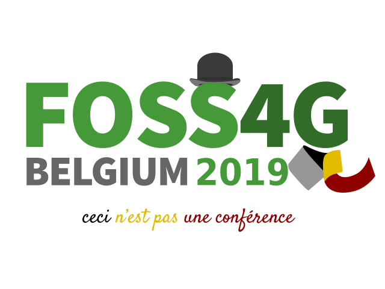
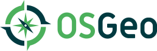

FOSS4G Belgian Team
FOSS4G Belgium is the yearly Belgium event about Free and Open Source Software for Geospatial.
It is organised by the Belgium Chapter of the Open Geospatial Foundation (OSGeo.be), which
is one of the more than 50 local chapters of the Open Geospatial Foundation (OSGeo) worldwide.
As of today, almost every week there is a FOSS4G conference, somewhere on this planet. But only one is located in Brussels.
The conference is for and by everybody who is interested in an open and inclusive world. We promote free and open source software, but also open standards, open data, open government, ...
During the past conferences, around 400 enthusiasts came over. Thanks to our sponsors, we can keep the entrance free.
Volunteers are presenting and sharing their best practices and experiences. Anybody is encouraged to submit a paper to present.
And because the topic is all about Geo, maps are an important topic so we have a wall with the most beautiful maps.
Show of your best by sending in your maps!.
If we have to describe a FOSS4G conference in one sentence, we should describe the fantastic atmosphere and energy around the event.
OSGeo

The foundation's projects are all freely available and usable under an OSI-certified open source license.